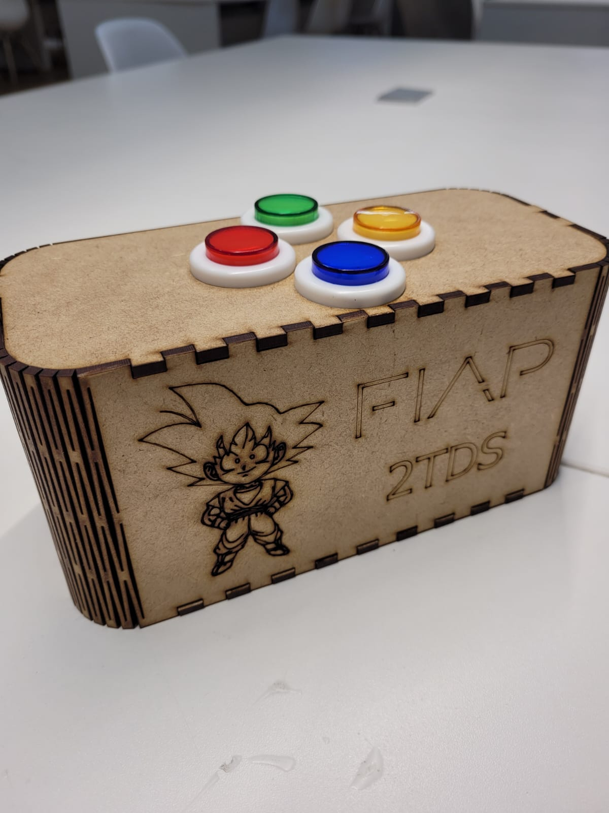

CHECKPOINT3¶
- O objetivo do checkpoint é avaliar sua compreensão acerca do conteúdo ministrado pela disciplina.
Use como base o código de exemplo do jogo da memória disponível neste repositório. - https://www.github.com/arnaldojr/IoT - link para download: jogo da memória
Você vai precisar:
- ▶️ Arduino UNO
- ▶️ LEDs
- ▶️ Botões
- ▶️ Buzzer
- ▶️ Alguns resistores, jumpers e protoboard
Ideia geral¶

Neste checkpoint vocês vão desenvolver um protótipo de um jogo da memória genius para arduino, que em linhas gerais irá possuir as seguintes interfaces:
- 4 ou mais LEDS de cores diferentes
- 4 ou mais Botões
- Buzzer
- Interface de comunicação serial
A seguir iremos detalhar um pouco mais como deve ser feito o protótipo e o que estará sendo avaliado.
Genius arduino¶
O funcionamento do jogo é similar com qualquer outro jogo da memória, o jogador primeiramente da start no game. Os LEDs piscam de forma aleatória um por vez, em seguida o jogador pressiona os botões na sequência correspondente às cores dos LEDs. Se a sequência estiver correta, o jogador passa para o próximo nível de dificuldade, se errar é game over.
A seguir detalhes do funcionamento:
Requisitos funcionais básicos:
- LEDs: Implemente o jogo com 4 LEDS de cores diferentes.
- BOTÕES: Implemente o jogo com 4 BOTÕES, no seu código cada botão corresponde a uma cor de LED.
- BUZZER: Implemente BUZZER para emitir uma frequência para cada cor de LED, o Buzzer deve tocar na sequência aleatória e no pressionar das teclas.
Requisitos funcionais avançados:
- Comunicação (monitor serial): Implementa comunicação serial, o usuário pode jogar com os botões e/ou a interface serial (monitor serial arduino).
- Comunicação Python: Implementa comunicação serial, um script python recebe via serial a informação da cor LED e exibe e exibe para o jogador o nome da cor.
- Comunicação comando de voz: O script em python se comunica com o arduino recebendo a informação da cor e emite por comando de voz do computador a cor que acendeu.
A rubrica segue o detalhamento:
| Nota | Itens |
|---|---|
| 6 | Cumpre requisitos funcionais básicos |
| 7 | Cumpre requisitos funcionais básicos e comunicação serial (monitor serial) |
| 8 | Cumpre requisitos funcionais básicos e comunicação python |
| 9 | Cumpre requisitos funcionais básicos e Comunicação por comando de voz |
| 10 | Cumpre requisitos funcionais básicos ao menos 1 requisito avançado e apresenta o protótipo funcional em um case personalizado |
Como fazer uma case personalizado:
- Case: No site https://www.festi.info/boxes.py/ é bem simples elaborar um case personalizado para o seu protótipo, tudo online e gratis, como o da imagem abaixo.

- Alguns links de videos para te ajudar a desenvolver seu case:
- Manual do Mundo
- Angelo Conti
- Maker Space 307
- Smoke & Mirrors
- Especificação da máquina CNC para fabricação: Escolha a espessura de 3mm para o MDF.